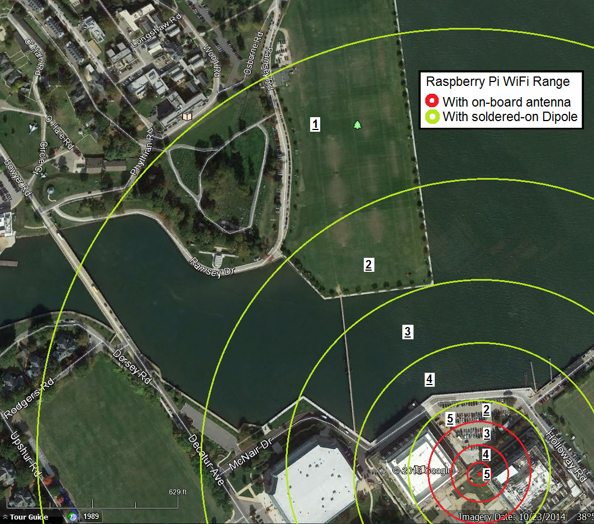
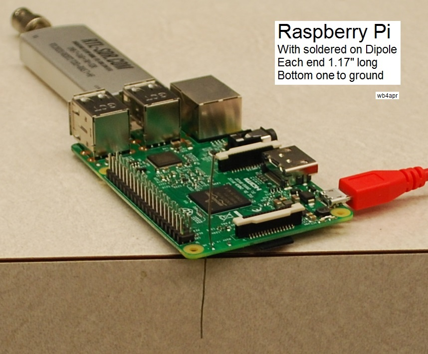
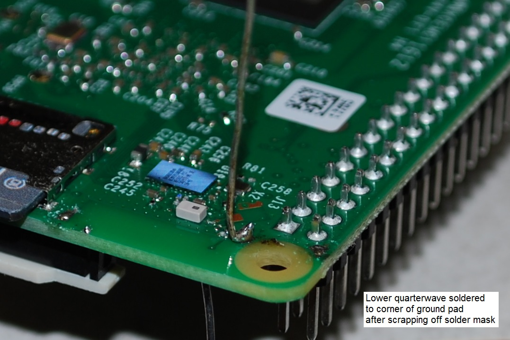

Using the Outernet node as a Ham Radio HotSpot
US Naval Academy Satellite Lab,
Bob Bruninga, WB4APR
lastname@usna.edu
Ham Radio Event - WiFi HotSpot: The Outernet receiver is just a stand alone box that receives Outernet Content (including a ham radio feed) anywhere in the world via geostationary satellites and makes that content available to anyone in range of its internal WiFi. Although the original design of the Outernet system was for global access in remote contries of the world, its WiFi file server can also be used for providing content to Ham Radio events. The sysop of the node can upload files to the server and then all people at the Venue can have access. Examples of content that might be of value:
Shown at right is a typical oudoor enclosed Outernet Raspberry Pi HotSpot and then the oudoor range overlayed on the familiar Hara Arena in Dayton Ohio. This was the site of the annual pilgramige of about 20,000 hams to the Hamvention. It shows that outernet files served from the PI could be available to all participants if the node was raised high enough to clear the building in all directions. This is the 1000' circle of a Raspberry Pi after a full size WiFi dipole is added to the board as described below.
Actual Range Test: To get the size of the circle, I set my PI outdoors and walked around the Naval Academy with my laptop to watch the bars on the WiFi display as shown below. The red circles show the disappointing range of the PI using its installed chip antenna on the board. When I removed the chip antenna and soldered full size 1/4 wave wire whips to make a full size WiFi dipole, the range inproved to the approximate 1000' radius (for 2 bars) as shown with green. This was a subjective test and I was holding the laptop in its most favorable WiFi direction. It is unknown how this scales to the WiFi in a typical phone, for example.

Modifying the PI antenna: The next two images below show the Raspberry Pi with the wire whips installed. The top half of the dipole is clearly the driven 1/4 wave monopole. The other side of the dipole is just soldered to the corner of the groundplane on the bottom of the board. The lengths of the wires are 1.17" for resonance (assumed) at 2.4 GHz.
 . . . 
Better Antenna? The better way to get even more range is to not do the simple vertical dipole I did, but to instead, install an actuall antenna connector on the PI and then a commercially available maybe 9 dBi vertical antenna can be attached and then the PI can be encolsed vertically in a pipe instead of the horizontal arrangement I am showing here. In fact, my wire whip could probably better have been soldered pointing off the edge of the board so the Pi can be installed vertically. The red USB connector is only used for power, so that can be removed and fit much better in a pipe.
Another possibility is to make the vertical wire be more than 1/4 wavelength. Maybe it can be bent into a phasing section and another 1/2 wave above it. This can gain a theoretical 1.6 dB but might not be worth doing, since the driving impedance is different. But worth trying, since Hams love making antennas!
Bob Bruninga, WB4APR
lastname at usna dot edu